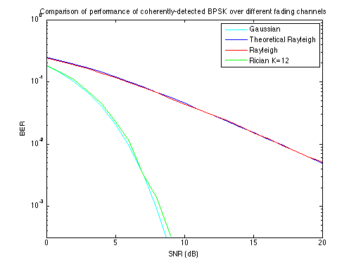

Comparison of performance of coherently-detected BPSK over different
Contents
fading channels
Copyright 2007 Telecommunications Lab Generate data and apply fading channel.
M = 2; % BPSK modulation order tx = randint(50000,1,M); % Random bit stream pskSig = dpskmod(tx,M); % PSK signal % % Compute error rate for different values of SNR. SNR = 0:1:20; % Range of SNR values, in dB. for n = 1:length(SNR) rxSig = awgn(pskSig,SNR(n)); % Add Gaussian noise. rx = dpskdemod(rxSig,M); % Demodulate. % Compute error rate. % Ignore first sample because of DPSK initial condition. [nErrors, BER(n)] = biterr(tx(2:end),rx(2:end)); end % Create Rayleigh fading channel object. chan1 = rayleighchan(1/10000,100); fadedSig1 = filter(chan1,pskSig); % Effect of channel SNR = 0:1:20; % Range of SNR values, in dB. for n = 1:length(SNR) rxSig1 = awgn(fadedSig1,SNR(n)); % Add Gaussian noise. rx1 = dpskdemod(rxSig1,M); % Demodulate. [nErrors, BER1(n)] = biterr(tx(2:end),rx1(2:end)); end % Create Rician fading channel object. chan2 = ricianchan; chan2.KFactor = 12; fadedSig2 = filter(chan2,pskSig); % Effect of channel SNR = 0:1:20; % Range of SNR values, in dB. for n = 1:length(SNR) rxSig2 = awgn(fadedSig2,SNR(n)); % Add Gaussian noise. rx2 = dpskdemod(rxSig2,M); % Demodulate. [nErrors, BER2(n)] = biterr(tx(2:end),rx2(2:end)); end % Compute theoretical performance results, for comparison. BERtheory = berfading(SNR,'dpsk',M,1); % Plot BER results. %semilogy(SNR, BER,'r*');legend('Rician K=12'); semilogy(SNR, BER,'c',SNR, BERtheory,'b-', SNR, BER1,'r', SNR, BER2,'g'); legend('Gaussian','Theoretical Rayleigh','Rayleigh','Rician K=12'); xlabel('SNR (dB)'); ylabel('BER'); axis([0 20 10^-3.5 1]); title('Comparison of performance of coherently-detected BPSK over different fading channels');